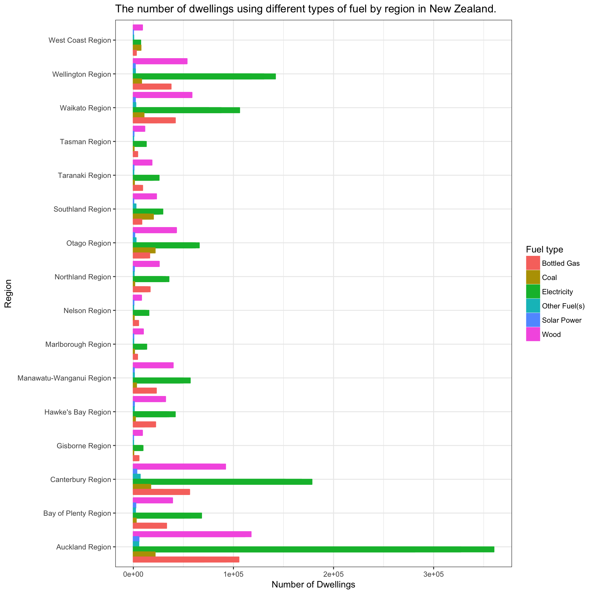

get-going-nzcensr.RmdThe nzcensr package is a data package which makes it easy to import the New Zealand Census data as either normal or spatial dataframes without having to download the data for each project and perform different joins. The package contains the following data sets:
All of these data sets are provided at the meshblock, area unit, local board, territorial authority (“tas”) and regional spatial level. They all follow the same regular naming convention of data set name with the spatial area following e.g.
dwelling_area_unitsor
individual_part_3bAll of the data sets are lazily loaded which means that they are only brought into memory when called; not when the package is just loaded.
On top of making these data sets easily available, it also makes it easy to import the data in a tidy way, using the function transform_census.
A key idea behind this package is the idea of making it easier to access and know what data is available. The function nz_census_tables makes it easy to explore the data. Simply calling it without any arguments returns a table with all of the data frames available, and a small note explining what they are:
DT::datatable(nz_census_tables())This function also accepts the input of a table which returns all of the unique topics in the data set, and whether to include the variables or not.
DT::datatable(nz_census_tables(dwelling_area_units))or
DT::datatable(nz_census_tables(dwelling_area_units, variables = TRUE))Of course, it probably makes sense to explore variables for a single topic:
nz_census_tables(dwelling_area_units, variables = TRUE) %>%
filter(topic == "fuel_types_used_to_heat_dwellings_(total_responses)(4)_for_occupied_private_dwellings") %>% DT::datatable(.)Cool, now we have a few functions to explore the data, let’s have a look at the types of fuel used in New Zealand by region by making a nice plot. This information is contained in the dwelling data set which we can call with dwelling_regions. However, this is still a relatively ‘dirty’ data set in the wide format and not conducive to plotting in ggplot. To easily transform the data, use the function called transform_census. This function provides several options to organise and manipulate the data, such as: whether you want it in long or wide form, gis columns, replacement of confidential values, cleaned and split out to topics and variables. Firstly, let’s filter out the data using the select_census_topics function which makes it easy to select columns based on a specific topic, and then transform it into the long format, without the GIS geometry column, replacing the confidential (‘..C’) values, and with the topics and variables split out from each other.
nz_fuel_types_by_region <- select_census_topics(dwelling_regions,
"fuel_types_used_to_heat_dwellings_(total_responses)(4)_for_occupied_private_dwellings") %>%
transform_census(replace_confidential_values = NA_integer_,
long = TRUE,
clean = TRUE,
include_gis = FALSE)
DT::datatable(nz_fuel_types_by_region)OK, that is in a nice format. Let’s plot a bar chart of the different fuel types by region.
nz_fuel_types_by_region_refined <- filter(nz_fuel_types_by_region,
variable %in% c("Bottled Gas", "Coal", "Electricity",
"Other Fuel(s)", "Solar Power", "Wood"),
Description != "Area Outside Region")
ggplot(nz_fuel_types_by_region_refined, aes(x = Description, y = value, colour = variable, fill = variable)) +
geom_col(position = "dodge") +
scale_fill_discrete(name = "Fuel type") +
scale_colour_discrete(name = "Fuel type") +
xlab("Region") +
ylab("Number of Dwellings") +
ggtitle("The number of dwellings using different types of fuel by region in New Zealand.") +
theme(legend.position="top", legend.direction="horizontal") +
coord_flip() +
theme_bw()